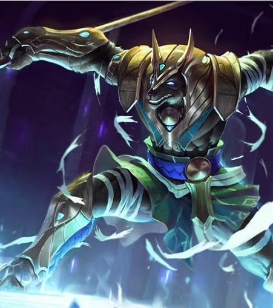

Nasus, el Curador de las Arenas
Ser ancestral proveniente de Shurima, Nasus es un ascendido con cabeza de chacal, reconocido por su sabiduría y su mente estratégica. Durante siglos protegió su imperio junto a su hermano Renekton.
Tras la caída de Shurima, vagó por el desierto esperando el momento de restaurar el equilibrio. Su poder crece con el tiempo, castigando a sus enemigos con una fuerza cada vez más devastadora.